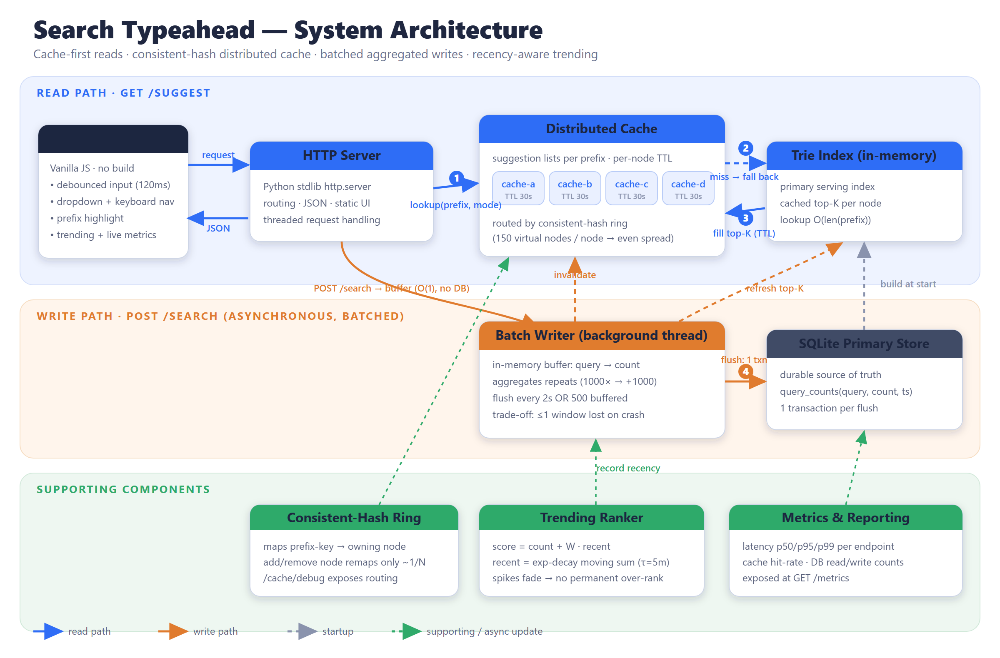

The system is a single Python process that serves both the JSON API and the UI. Reads are served cache-first from an in-memory Trie; writes are buffered and flushed in aggregate to SQLite. Every concept is implemented from scratch (no frameworks) so each design decision can be explained directly.

| Component | File | Responsibility |
|---|---|---|
| HTTP Server | backend/server.py | Routing, JSON IO, static hosting; threaded. |
| Trie Index | backend/trie.py | In-memory serving index; cached top-K per node. |
| Distributed Cache | backend/cache.py | 4 logical nodes, each a TTL dict; hit/miss counters. |
| Consistent-Hash Ring | backend/consistent_hash.py | Maps a prefix key to its owning cache node. |
| Batch Writer | backend/batch_writer.py | Buffers submissions; flushes aggregated writes. |
| Primary Store | backend/store.py | Durable query_counts table in SQLite. |
| Trending Ranker | backend/trending.py | Time-decayed recency score for ranking. |
| Metrics | backend/metrics.py | Latency percentiles, hit-rate, DB op counters. |
The prefix and mode form a cache key "{mode}:{prefix}". The consistent-hash ring selects the owning cache node ①. On a hit the cached suggestion list is returned immediately. On a miss ② the system falls back to the Trie (the in-memory primary index), which returns the cached top-K for that prefix in O(len(prefix)); the result fills the cache with a TTL ③ and is returned.
A submission is not written to the database inline. It adds +1 to an in-memory buffer and returns {"message":"Searched"} in O(1). A background thread flushes the buffer ④ every 2 seconds or once 500 distinct queries accumulate: it aggregates repeats, writes them in a single SQLite transaction, refreshes the Trie's top-K, feeds the recency tracker, and invalidates the affected cached prefixes.
The store ingests a plain-text file, one record per line, as query<TAB>count (commas are also accepted). The project ships a generator that produces 120,000 distinct queries (the assignment requires ≥100,000).
iphone 1000001 samsung 500000 iphone charger 18184 java tutorial 2078 best laptop review 64
Counts follow a Zipf-like (power-law) distribution — a few head queries are extremely popular and a long tail is rare — which is the real shape of search traffic and the shape that makes typeahead and caching meaningful. Generating it guarantees the project runs out-of-the-box at the required size with no download or licensing friction. Queries are composed from realistic brands, products, tech topics, adjectives, and intent tails (e.g. "iphone charger", "best laptop review", "java interview questions"), with short clean queries ranked highest so the typeahead head looks natural.
# 1. generate the dataset (writes data/queries.txt) python scripts/generate_dataset.py # default 120,000 python scripts/generate_dataset.py 250000 # optional: larger # 2. start the server — first run ingests the file into SQLite, then builds the Trie python -m backend.server
Ingestion is idempotent and runs only when the database is empty. On startup the log reports rows ingested and Trie build time.
Produce the same query<TAB>count format, save it as data/queries.txt, delete data/typeahead.db*, and restart. Suitable sources: Wikipedia page titles (use pageviews as the count), the AOL query log (aggregate identical queries), or any e-commerce product catalogue (use views/sales). If a source has no counts, derive them by counting duplicate occurrences.
Base URL http://127.0.0.1:8000. All responses are JSON. A machine-readable summary is served at GET /api.
Up to 10 prefix-matching suggestions. mode=count (default) ranks by total search count; mode=trending ranks by the recency-aware score.
// GET /suggest?q=iphone
{ "prefix":"iphone", "mode":"count", "source":"cache",
"suggestions":[ {"query":"iphone","count":1000001},
{"query":"iphone charger","count":18184} ] }
Body {"query":"..."}. Records the query via the batch buffer and returns a dummy response. Does not touch the database inline.
// POST /search {"query":"iphone 15 pro"}
{ "message":"Searched", "query":"iphone 15 pro", "recorded":true }
Top queries overall by the recency-aware trending score, each with its real count, decayed recent activity, and combined score.
Explains routing: which cache node owns the prefix (consistent hashing), HIT/MISS state, the key & ring-point hashes, and a sample of how keys distribute across nodes.
// GET /cache/debug?prefix=iphone
{ "prefix":"iphone", "owner_node":"cache-a", "state":"HIT",
"sample_distribution":{"cache-a":6,"cache-b":2,"cache-c":3,"cache-d":4},
"ring_nodes":["cache-a","cache-b","cache-c","cache-d"], "vnodes_per_node":150 }
Latency p50/p95/p99 per endpoint, cache hit-rate (overall and per node), batch write-reduction, DB op counts, and Trie size. GET /healthz is a liveness probe.
| Method & path | Purpose |
|---|---|
| GET /suggest | Prefix suggestions (count or trending). |
| POST /search | Record a search (batched); returns "Searched". |
| GET /trending | Recency-aware trending list. |
| GET /cache/debug | Consistent-hash routing + HIT/MISS. |
| GET /metrics | Latency, hit-rate, write-reduction. |
| GET /healthz | Liveness. |
Each Trie node caches the best K completions of its prefix, so a lookup is O(len(prefix)) with no subtree scan. The top-K is maintained incrementally and is exact because search counts only ever increase: a query can only enter a node's top-K by growing, which the update path always catches. A plain sorted-array scan would re-sort thousands of completions for short, hot prefixes on every miss.
The cache is sharded across 4 logical nodes. Each is placed at 150 points on a hash ring, which (a) spreads keys evenly — measured ≈25% per node — and (b) means adding/removing a node remaps only ~1/N of keys instead of the whole keyspace. MD5 is used purely as a fast, well-distributed hash, not for security.
Cached suggestion lists expire after a 30-second TTL as a safety net, and a batch flush also explicitly deletes the prefixes whose counts just changed. This keeps suggestions fresh without waiting for the TTL, while the TTL bounds staleness for anything not actively invalidated.
POST /search is O(1) and never touches SQLite; it only increments an in-memory buffer. A background thread flushes every 2 s or every 500 buffered queries, aggregating repeats so 1000 searches of "iphone" become a single +1000 upsert in one transaction. This collapses thousands of writes into a handful.
The same /suggest API serves both rankings. Basic (mode=count) ranks by total count. Enhanced (mode=trending) uses score = count + W · recent, where recent is an exponentially-decaying moving sum updated on each flush:
recent ← recent · exp(−Δt / τ) + delta # τ = 5 min score ← count + W · recent # W = 20,000
No pip install means the project runs anywhere with just Python, which satisfies "easy to run locally" and keeps every mechanism visible and explainable. SQLite is a real, file-based database with transactional writes — ideal for demonstrating batched DB writes without running a separate server.
Measured on Windows 11, Python 3.14, 120,000-query dataset, via scripts/benchmark.py (drives the running server over HTTP). All numbers are reproducible by running that script.
| Measurement | p50 | p95 | Notes |
|---|---|---|---|
| Server-side /suggest | ~0.05 ms | 0.08 ms | internal timing (cache + Trie) |
| End-to-end (HTTP, localhost) | ~1.9 ms | ~2.3 ms | includes loopback + JSON overhead |
| Cold (forced cache miss) | ~1.9 ms | ~2.1 ms | Trie lookup still O(len(prefix)) |
The Trie keeps even cold lookups fast, and the distributed cache absorbs repeated hot prefixes — measured hit rate ≈ 92% under the benchmark's repeated-prefix workload.
| Metric | Value |
|---|---|
| Search submissions in test burst | 2,000 |
| SQLite write transactions used | 3 |
| Reduction for the burst | ~666× fewer writes |
| Steady-state overall reduction (submissions ÷ txns) | ~125×–195× |
Because every submission is buffered and only flushed in aggregate, write amplification drops by two to three orders of magnitude versus one-write-per-search.
A sample of prefix keys routed across the 4 cache nodes: cache-a:6, cache-b:2, cache-c:3, cache-d:4 — close to even given the small sample, and exposed live at /cache/debug. Unit tests assert each node receives 15–35% of 8,000 keys and that removing a node remaps <45% of keys.
For prefix "co", the tail query "consistent hashing" has a base count of ~650. After 1,500 recent searches its trending score rose to ~29,660,989 (count + W·recent), dominating the ranking; with no further activity the boost decays back toward the base count over a few τ. This demonstrates both the lift from recent activity and the anti-over-ranking decay.
# terminal 1 python -m backend.server # terminal 2 python scripts/benchmark.py # prints latency, hit-rate, write reduction, trending python -m unittest discover -s tests -v # 8 component tests